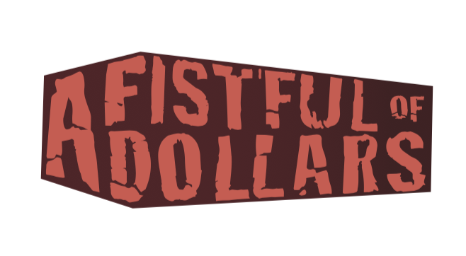
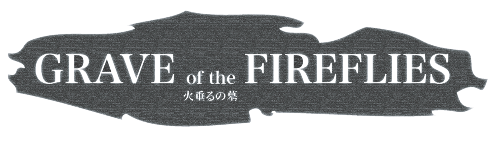
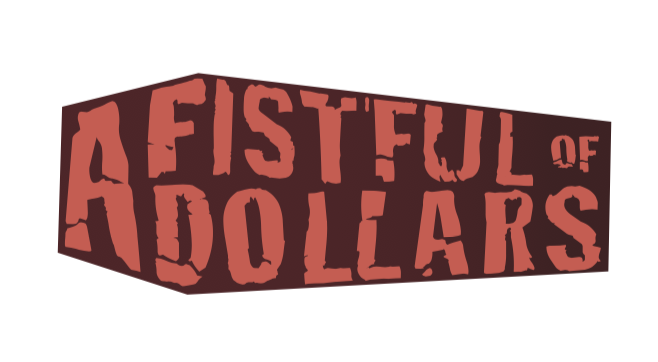
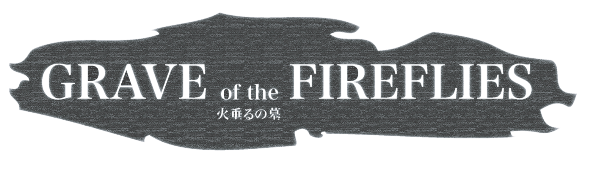

Rimar Villasenor, spring 2011, Ohio State
 Josiah Poland, spring 2011, Ohio State
 Lee-Arng Chang, winter 2011, Ohio State
 Alexander Bergendahl, winter 2011, Ohio State
Alexander Bergendahl, winter 2011, Ohio State
Use Adobe Illustrator to create a movie logo for the same movie you choose on the previous assignment.
Meet the exercise criteria: 40%
Technique and Execution: 30%
Challenge: 20%
Aesthetic: 10%
Submit a PDF file to PolyLearn.
Rimar Villasenor, spring 2011, Ohio State
 Josiah Poland, spring 2011, Ohio State
 Lee-Arng Chang, winter 2011, Ohio State
 Alexander Bergendahl, winter 2011, Ohio State
Alexander Bergendahl, winter 2011, Ohio State